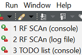
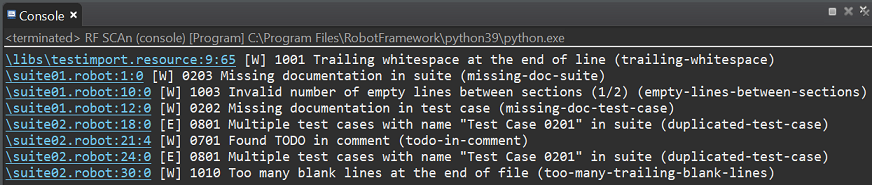
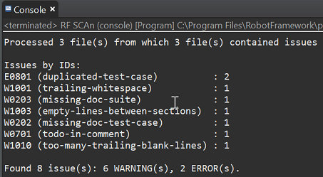
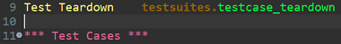
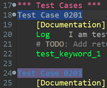
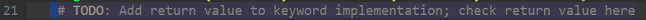
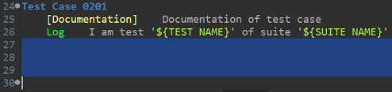
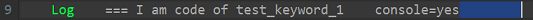

Version 0.1.0 / 05.08.2021 / by XC-CI1/ECA3-Queckenstedt
Robotframework sources are present in robot files (.robot) and in resource files (.resource). The maturity of these files can be checked by a static code analyser called Robocop.
Robocop is integrated in Eclipse and can be accessed by the External Tools menu.
It is possible to check a single file only and it is also possible to check complete folders. In case of a folder is checked, Robocop searches within this folder recursively for robot and resource files.
Caution: Robocop does not consider imports! If a single robot file is checked and this robot file imports a resource file, then this resource file is not also checked. The resource file has to be selected separately.
In Eclipse Project Explorer select a single Robotframework file or a folder.
Open the External Tools menu and select one of the listed items belonging to Robocop. Currently available are the following preconfigured settings:
RF SCAn is the abbreviation for RobotFramework Static Code Analysis.
The results of the execution are available either within the Eclipse console window or within a separate log file (depending on the selected item, for details see Preconfigured settings).
RF SCAn (console)
- Robocop executes a relevant subset of available checks (some checks that are not really helpful or against internal coding conventions, are excluded).
- The output of Robocop is listed within the Eclipse console window.
- The advantage of the console window is that every finding is a link to the position at which the finding occurs. A double click on the link causes the Red editor to open the affected file at this position.
RF SCAn (log file)
- Robocop executes a relevant subset of available checks (some checks that are not really helpful or against internal coding conventions, are excluded).
- The output of Robocop is written to the following log file: %ROBOTLOGPATH%\Robocop.log
- This option is mostly for documentation purposes.
TODO list (console)
- Robocop executes only a single check that searches for the string TODO within comment blocks.
- The idea behind this is: Every developer who needs a reminder about what still has to be done before the next release, uses the TODO string to mark the corresponding position in the code. Before a release this check tells if all things are done or if something has been forgotten.
- Therefore the TODO string inside code comments should be used for developer internal communication and not to give common hints to customer. A released code should not contain any TODO strings any more, except a good reason is added why it is not possible to resolve the TODO.
The output of Robocop is the same in console and in log file, and consists of two parts:
Part 1: A list of findings
Every line within the list is a finding. Every finding contains the following informations:
Example:
Part 2: A final statistic
The final statistic tells how often every type of finding has been found in the entire checked code, sorted by the number of occurrances.
Example:
The output of Robocop starts with a DEPRECATION WARNING. This warning informs about changes between the current version and the previous version of Robocop and can be ignored.
The files within this tutorial show some examples for Robocop findings.
Findings in file suite01.robot
Warning 0203 : Missing documentation in suite
Tells that the documentation of the suite is missing.
Warning 1003 : Invalid number of empty lines between sections (1/2)
Within suite01.robot there is only one blank line between the end of the *** Settings *** section and the *** Test Cases *** section.
To ease the readability of the code Robocop wants to have exactly two blank lines between sections.
Warning 0202 : Missing documentation in test case
Tells that the documentation of the test case is missing.
Findings in file suite02.robot
Error 0801 : Multiple test cases with name "Test Case 0201" in suite
Accidently two tests inside the suite have the same name. This error is listed multiple times (every single occurrance of the same name is a separate finding).
Test names must be unique.
Warning 0701 : Found TODO in comment
A TODO marker indicates that still something is to do in the code.
A TODO marker needs to have an own line and must not be placed at the end of a line containing code!
Warning 1010 : Too many blank lines at the end of file
Only one blank line is expected at the end of a file.
Findings in file testimport.resource
Warning 1001 : Trailing whitespace at the end of line
Tells that there is additional whitespace (here: 4 blanks) at the end of the line.
No additional whitespace is expected at the end of a line.
Summary:
Checking the complete Robocop tutorial section causes the following list of findings (the file paths are shortened):